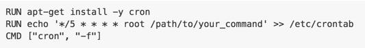
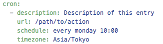

Running cron jobs with GKE
Running cron jobs with GKE
Generally when you are running your apps on containers like I do (in my case on Kubernetes), you have a bunch of images that run only the absolute minimum executable that’s required on each container. That means when you want to run stuff from cron, you usually don’t have crond running in the background.
(Note: When this post was written, Kubernetes Cron Jobs were still not available in GKE. I still don’t think I would want to rely on Kubernetes for cron jobs *YET*, but in the future, maybe — Feb 2018)
Amazon配送商品ならKubernetes: Up and Running; Dive into the Future of Infrastructureが通常配送無料。更にAmazonならポイント還元本が多数。Kelsey…www.amazon.co.jp
It feels sort of silly to create a multi-hundred-megabyte image like below just to run cron on your containers.

Sometimes this is the only way, but I’m using Google Container Engine (GKE). Google Cloud Platform (GCP) also has this really nice thing called Google App Engine (GAE), which has a built-in cron-like functionality.
GAE in its essence only allows you to create Web applications — that means the server has no way to start an action,and you must wait for requests to come to initiate an action. But GAE has an external scheme to send requests to our application at certain timings.
All you basically need to do is to define a file like below:

And now you can expect to receive a request to “/path/to/action” every monday at 10:00. You should also make sure that this path is not accessible from random clients from the internet. What happens if somebody decides to keep requesting that url repeatedly? Bunch of bogus jobs are going to be queued up. To disable access from regular clients except those that come from cron, just specify “login: admin” in app.yaml
Now, all we need is to send a request from GAE instance to GKE. This doesn’t happen automatically, so you need to make sure you have a Kubernetes service that has an external IP address. You also need to secure access to this service, so you will have to do some sort of authentication.
I opted to just issue a 86 char token which will be embedded in the request’s header.
And all was good. The upside of this is also that if you are not going to be charged for using GAE like this unless you are hitting your application with a LOT more requests than daily cron jobs.
Happy job queuing!